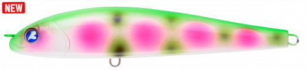
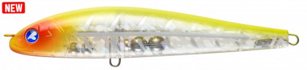
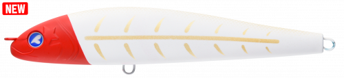
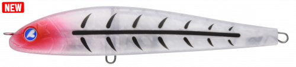

フォースガイル160F
（Force Guile 160F）
フォースガイル160FはBlueBlue（ブルーブルー）のS字系ペンシルベイトです。
青物用のダイビングペンシルとは違い、シーバスをメインターゲットに開発されたモデル。ダイブ中にルアーを見失うほど幅の広いS字軌道を描いて強い波動を出し、ただ巻きでも水面直下をS字で泳ぎます。コノシロやボラなど大型ベイトに付いた魚を狙うためのペンシルです。

画像出典:BlueBlue公式HP
スペック
- メーカー
- BlueBlue（ブルーブルー）
- タイプ
- S字系ペンシルベイト（フローティング）
- 全長
- 160mm
- 自重
- 50g
- 推奨フック
- トレブル#1〜1/0
- 推奨リング
- #5〜6
- 構造
- 1.2mm貫通ワイヤー＋マグネット式重心移動
- ターゲット
- シーバス・青物
- 価格
- 2,950円（税別）
▼今すぐチェック
フォースガイル160Fの特徴
驚くほど幅の広いS字軌道で、大型ベイトの中でも気付かせる
-
見失うほど幅の広いS字軌道
ストロークの長いジャークでは、ルアーを見失うほど幅の広いS字軌道で強い波動を出し、広い範囲から魚を寄せます。ショートジャークではクイックなS字で食わせを演出します。
-
ただ巻きでもS字
ただ巻きするだけで、水面直下をS字軌道で泳いでくる設計。誰でも簡単に操作できます。
-
強度と飛距離を両立
1.2mmの貫通ワイヤー構造でありながら、マグネット式重心移動を採用。従来のペンシルベイトでは難しかった強度と飛距離を両立しています。
フォースガイル160Fの使い方
基本はロングジャークでのダイブ。ロッドを大きくあおって潜らせ、幅の広いS字を描かせたら、浮き上がるのを待って次のジャークを入れます。
食わせたいときはショートジャークでクイックなS字に、手早く探りたいときはただ巻きで水面直下をS字で引いてきましょう。ルアーとの距離が遠いほど、S字の幅は広くなります。
フォースガイル160Fの得意な状況
コノシロやボラなど大型ベイトが入っている秋〜冬の河口・港湾・サーフ。大型ベイトに付いたランカーシーバスを狙いたいときや、広い範囲から魚を寄せたいときに向いています。
ワンポイント
浮き姿勢が水平に近いため、バイトを弾きにくくフッキング率が高いのも特徴です。フックは推奨の範囲で、使うタックルに合わせて選びましょう。
BlueBlueの大型ベイト向けルアーの使い分け
| モデル | 全長／自重 | 得意な場面 |
|---|---|---|
| フォースガイル160F | 160mm／50g | 幅の広いS字で強く寄せるペンシル（本記事のモデル） |
| ゼッパー140F | 140mm／36g | 激しいワイドアクションのビッグミノー |
| ボラコン150 | 150mm／48g | ワーム素材のジョイントで、ボラそっくりに泳がせたいときに |
どれも大型ベイトパターン向けのルアー。アクションの強さや見せ方で使い分けましょう。
人気カラー
公式ラインナップから4色を紹介します（カラー名は公式の表記のまま）。

#09 パパロットカラフルなアピールカラー。濁りや反応を見たいときに。

#10 ホットマスタードマスタード系のカラー。濁りの強い河川や曇りの日に。

#11 KOTOBUKIおめでたい名前の個性派カラー。定番色に反応がないときのローテーションに。

#12 スケスケレントゲンクリア系のカラー。澄み潮でスレた魚に見切られにくくしたいときに。
画像出典:BlueBlue公式HP
フォースガイル160Fに似ているルアー
-
 オセロスペンシル130F
シマノ
詳細はこちら＞
オセロスペンシル130F
シマノ
詳細はこちら＞
全長130mmのフローティングペンシル。ひと回り小さいサイズで、ドッグウォークで見せたいときに。
-
 ガチペン130
ブルーブルー
詳細はこちら＞
ガチペン130
ブルーブルー
詳細はこちら＞
全長130mm・自重30gのダイビングペンシル。同じBlueBlueで、マイクロベイトパターンのときに。
-
 キリンジ120
メガバス
詳細はこちら＞
キリンジ120
メガバス
詳細はこちら＞
全長120mm・自重21gのウェイクベイト。大きめのベイトを引き波で誘いたいときに。